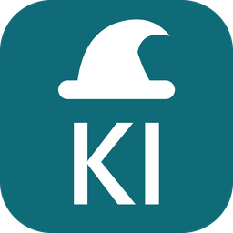
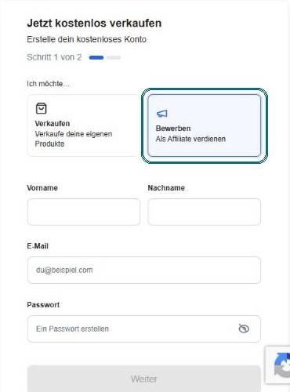

KI-TarnkappeDer KI-AnonymisiererDie KI-Tarnkappe empfehlen und mitverdienen
Du kennst Kollegen, die mit KI arbeiten wollen, aber Kundendaten im Spiel haben? Dann bekommst du 20 % von jedem Kauf über deinen Link. Kostenlos und in zwei Minuten eingerichtet.
Bei Digistore24 anmelden
Digistore24 zahlt dir die Provision aus. Die Anmeldung ist kostenlos, und du bist sofort Partner für die KI-Tarnkappe.
Kostenlos Partner werdenNoch nie bei Digistore24? So geht die Anmeldung

- Ein Fenster zu Cookies erscheint: „Nur notwendige“ reicht.
- Bei „Ich möchte …“ auf „Bewerben“ klicken (Als Affiliate verdienen). Nicht „Verkaufen“.
- Vorname, Nachname, Mail und ein Passwort eintragen, dann „Weiter“.
- Bei „Öffentliche ID“ denkst du dir deinen Namen bei Digistore24 aus, zum Beispiel deinen Nachnamen. Das ist deine Digistore24-ID, merk sie dir: Du brauchst sie gleich in Schritt 2.
- Land wählen, den Nutzungsbedingungen zustimmen, „Konto erstellen“. Die Marketing-Mails von Digistore24 kannst du leer lassen.
Deinen Link holen
Trag deine Digistore24-ID ein. Du findest sie in Digistore24 oben rechts bei deinem Namen.
Wer über diesen Link testet oder kauft, wird dir zugeordnet. Die ID wird nirgends gespeichert, der Link entsteht nur hier in deinem Browser.
Weitergeben
Such dir aus, wo du es teilst. Der Text ist fertig, dein Link kommt hinein, sobald du in Schritt 2 deine ID eingetragen hast.
Ich arbeite jetzt mit der KI-Tarnkappe. Bevor ich einen Text an ChatGPT oder Claude gebe, drücke ich eine Taste, und aus meinen Kunden wird [Kunde A]. Danach kommen die echten Namen von selbst zurück. Alles bleibt auf meinem Rechner. Für DSGVO-bewusstes Arbeiten mit KI. 14 Tage gratis testen: https://ki-tarnkappe.com/
Betreff: Tipp: KI nutzen, ohne Kundendaten preiszugeben [Vorname], du weißt, wie das ist: Die KI könnte uns viel Schreibarbeit abnehmen, aber in jeder Mail und jedem Gesprächsprotokoll stehen Kundennamen, Adressen und Policennummern. Ich nutze dafür jetzt die KI-Tarnkappe. Text kopieren, eine Taste, und aus Anna Schulze wird [Kunde A], aus der Policennummer [Police A]. Damit arbeitet ChatGPT, Claude, Copilot oder Gemini. Mit der zweiten Taste stehen die echten Namen wieder drin. Die Kundendaten verlassen dabei nie den Rechner. Für DSGVO-bewusstes Arbeiten mit KI. Du kannst sie 14 Tage gratis testen: https://ki-tarnkappe.com/ Herzliche Grüße [Dein Name]
Viele in unserer Branche würden gern mit KI arbeiten. Was sie bremst: die Kundendaten. Ich nutze dafür die KI-Tarnkappe. Text kopieren, eine Taste, und Namen, Adressen, IBAN und Policennummern werden zu Platzhaltern wie [Kunde A]. Die KI arbeitet damit, und mit der zweiten Taste stehen die echten Namen wieder drin. Die Daten verlassen nie den Rechner. Für DSGVO-bewusstes Arbeiten mit KI. https://ki-tarnkappe.com/
Für wen ist das?
- Vermögensberater und Finanzdienstleister, die im Team gern zeigen, was funktioniert
- Versicherungsmakler mit Kollegen-Netzwerk
- Trainer und Berater, die anderen den Weg zur KI zeigen
- Leiter von Gruppen, Communitys und Arbeitskreisen
Häufige Fragen
Was kostet mich das?
Nichts. Die Anmeldung bei Digistore24 ist kostenlos, du gehst keine Verpflichtung ein.
Wie viel bekomme ich?
20 % von jedem Kauf über deinen Link. Digistore24 rechnet vom Betrag ohne Mehrwertsteuer und ohne seine Gebühr. Beim Einmalkauf sind das rund 12 €.
Bekomme ich auch etwas, wenn jemand das Abo verlängert?
Ja. Bei jeder Verlängerung im Jahres-Abo bekommst du wieder deine 20 %.
Wann und wie bekomme ich mein Geld?
Digistore24 rechnet die Provision ab und zahlt sie direkt an dich aus. Deine Verkäufe siehst du jederzeit in deinem Digistore24-Konto.
Muss ich die KI-Tarnkappe selbst nutzen?
Nein. Es hilft aber sehr: Wer erzählen kann, wofür er sie selbst nutzt, überzeugt am meisten.
Fragen? Schreib mir: support@top-effektiv.de